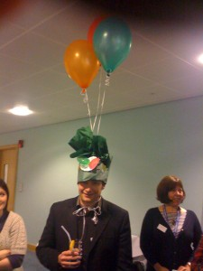

Girls education in India
ANNUAL ASSOCIATESHIP PACKAGES 2015-2016
The MirandaNet Fellowship international network is a professional organisation. In networking with MirandaNet scholars as well as associate companies the members gain new knowledge and experience about services and products that are important in improving teaching, learning and administration.
Associates can learn more about the education market and build up a network of advocates by joining as a scholar like the educators. Company colleagues can engage in the debates on mirandalink, work on MirandaNet professional development programmes and also gain accreditation for their work with MirandaNet educators.
This menu of MirandaNet services below is costed for each associate according to their requirements:
- your company logo featured on the MirandaNet associate’s page with a landing page about your services and products;
- a fully branded company page in the Associates section profiling your products and services to our global membership and networks;
- access to marketing through the EU education website with HandsON ICT project;
- access to our detailed web statistics;
- links to your web site;
- access to members’ contact details in accordance with an agreement on how and why members should be contacted in a professional organisation;
- opportunities to post to discussions on mirandalink;
- opportunity to publish company representatives profile;
- access to the members’ archive of mirandalink debates;
- leading debates on mirandalink on topics related to your product or services;
- the permissions to upload case studies;
- entries within the MirandaNet newsletter focused on good practice, product launches and free opportunities for members;
- inclusion and citations in collaborative advice to governments;
- advice on publishing articles for the international press and professional journals;
- advice on accreditation at certificate, diploma and Masters level for company representatives working with professionals on projects:
- MirandaNet accreditation for products and services;
- representation in global conference presentations made by MirandaNet members ;
- setting up MirandaNet chapters for teachers who buy your product or service;
- accrediting teachers who use your product or service;
- the opportunity to join a MirandaNet funding consortium in order to partner bid proposals to the EU, charities, government agencies, funding bodies like JISC, ESRC and the British Council;
- using World Ecitizens (wec.mirandanet.org.uk) as a publishing area for learners who use your product or service;
- quotations for: writing articles, setting up, resourcing and publishing a MirandaNet survey; action research projects; a workshop or accredited training programme and/or a MirandaMod for dissemination; joining MirandaNet at BETT and other exhibitions; sponsoring a MirandaMod topic; and, bespoke projects.
At cost
- invitations to networking and strategy dinners;
- invitations to professional workshops on associate matters.
Research for companies
The MirandaNet team can partner companies in several ways that help to market the company:
- Understanding the service or product, researching existing information and reporting on the current situation in the education market;
- Developing questionnaires with companies, setting them up, analysing and reporting on quantitative results;
- Organising and running focus groups, collating the results and publishing them;
- Undertaking face to face, phone or interent interview with users of products and services for research reports:
- Developing programmes to provide quantitative research data with built in benefits for the company in terms of professional engagement and marketing copy as well as benefits to the professional in terms of professional growth that can be accreditated.
- Suggesting development of existing markets and stimulation of new markets;
Marketing
In terms of marketing companies can disseminate through MirandaNet channels like professional journals and newsletter and closed emails lists. We can produce a range of different outputs to include:
- Writing article for different audiences;
- Advising on video marketing and other social media:
- Writing a MESH pathway for global publication for educators
- Writing an academic paper for conference presentation and Powerpoint presentations
- Organising, running and streaming a MirandaMod at a conference and mounting video on U-Tube
The team
 Dr Christina Preston, Professor of Educational Innovation at Bedfordshire University, who founded MirandaNet in 1992, draws on a team that is chosen from a wide range of MirandaNet Fellows. She can include associates in relevant publications in internal professional journals as in the UK Nationals, the Times Higher, the Times Educational Supplement and the UK quality national newspapers. Her pieces are also syndicated in Holland and Russia. She is a BETT judge and has recently won the Naace Lifetime Achievement Award.
Dr Christina Preston, Professor of Educational Innovation at Bedfordshire University, who founded MirandaNet in 1992, draws on a team that is chosen from a wide range of MirandaNet Fellows. She can include associates in relevant publications in internal professional journals as in the UK Nationals, the Times Higher, the Times Educational Supplement and the UK quality national newspapers. Her pieces are also syndicated in Holland and Russia. She is a BETT judge and has recently won the Naace Lifetime Achievement Award.
Contact Christina for more details about MirandaNet Associateships and fee scales as well as bespoke packages to suit company needs:
christina@mirandanet.ac.uk
More about Christina Preston here.
Read our testimonials here
Further information
The following section provides more information about;
- Becoming a MirandaNet Associate;
- Associates’ channel to market;
- Marketing outlets
- Marketing associates at conferences
- Networking opportunities;
- Initiating research projects
Becoming a MirandaNet Associate
Since 1992 MirandaNet has worked in associateship with a range of small and medium companies as well as key multinationals in educational technologies. We like to involve our company associates in our events as equal partners in the exchange of information. Face to face and online conferences and seminars provide a valuable showcase for products and services and research projects develop the relationships between developers and educators to mutual benefit.
Networking and dissemination opportunities can be as frequent as our associates wish as they have equal opportunities to plan the MirandaNet programmes and topics for professional knowledge exchange. Our remit is wider in 2013/2014/2015 because we are also working with our partners in an EU project called HandsOn taking place in Greece, Slovenia, Spain and The Netherlands.
{kind=link}
All our associates’ logos will be on the leaflets, press releases and web spaces as well as opportunities to speak at these events. Other kinds of sponsorship might be drinks receptions, conference bags, pull-ups and leaflet distribution. We welcome copy in our quarterly newsletter and our associate companies are mentioned in Fellows’ UK based and international speaking tours which in 2013/14 will be in Australia, Bulgaria, China, Czech Republic, New Zealand, Poland, Spain, Slovenia and the Netherlands.
MirandaNet consultants are keen to partner proposals that are underway and we offer partnerships in proposals we are planning. We also invite associates to join us when we are commissioned to do research, development and dissemination projects by international government agencies and charities.
We have long associations with many of our associates and hold quarterly networking dinners. Some company colleagues have been awarded a MirandaNet Fellowship for the programmes they have designed with us and others follow other accredited programmes as part of the associateship.
Associates’ channel to market
{kind=link}
The MirandaNet Fellowship is a portal to market with nearly 800 members in 80 countries. The website, the internal debating spaces and newsletter provide a cost effective marketing channel for targeting influencers and taste makers in schools as well as at local, national and international level. The membership includes teachers, senior managers, advisers, teacher educators, researchers and policy makers who are often account holders. MirandaNet Fellows have an influential voice at national level on issues concerning digital technologies and meet regularly with government Think Tanks and key members of government as well as important figures in the research field and teacher education, many of whom are members of MirandaNet. We are also well connected with influential national organisations in the use of digital technologies in education such as ITTE, Naace, ICTRN, BCS, IFIT, UNESCO and several University Special Interest Groups.
The website is well indexed and features prominently in Google searches. The site is well patronised and on average 1,300 pages are viewed each day. In detail, during 2012 the MirandaNet site had almost 68,000 unique visitors, with an average of 2 visits each, downloading slightly less than 7.5 pages per visit. In addition, web crawlers visited the site almost 1.8 million times, with an average of 13.5 hits per visit – which is one reason that MirandaNet appears high in most web searches of ICT, education, curriculum change and teacher CPD.
Marketing outlets

University of Bedfordshire
When Associates join us we tease out answers to questions our members and networks want to know:
- What makes your product different and innovative? Why is it newsworthy?
- What are the key outcomes/products/artefacts that can we refer people to?
- When will the main products be available and what interim steps can be seen?
- What are the key messages to disseminate to the teachers and mentors who we ask to pilot this?
- What are the key messages to disseminate to the general audience?
- What research can you refer to about your product?
- Is the research robust? Can a MirandaNet study help you here?
Once we have agreed these answers we then work out the best ways to disseminate your message by reaching parts that others cannot reach! MirandaNet has access to educators’ networks that are often closed or just unknown to companies.
Some of the channels we use are:
- Video pills. Videos by teachers about your product are a good idea as a medium for dissemination. In fact planning videos describing the project story boarding and a very clear idea of the key messages will be a good exercise. But it is very important to concentrate at this stage on the messages for the whole project e.g. what is the product focus.You Tube might be a good for disseminating videos but you need high number of views in order to get them a profile. There are now other systems than Youtube which is blocked in most school in the UK.
- Blogs – Amongst the MirandaNet membership are some bloggers are always needs contributions from ALL partners not just the UK. Need each partner’s project story, interests and expertise but needs to be in blog style not academic papers. In interesting blog would be the reason for chosing the MOOC package once this decision is taken
- Mirandalink all associates have access to the MirandaNet internal debating listserv which is active and informative. Sometimes articles can be written from members reactions to debating questions.
- The newsletter. All Associates can supply at least three stores a year with links, promote offers and ask for educators to test their product
- Links to and from the MirandaNet website. Associates can have a page on our website where they introduce themselves or a page on their website to which Miranda can link.
- Networks – Associates are invited into networks of educators as the opportunities appear.
- Press releases and news stories– MirandaNet can publish press releases and news stories in various forms.
- Social networking – Miranda has a Face book presence and a Twitter feed
- Affinity marketing – we can advise associates on seeking similar projects or innovations that are complementary to Handson and use them as vectors for SUSTAINED dissemination. This relates back to WP6. A teacher professional qualification in using ICT creatively to support their work would be a specific reason for teachers to participate and then disseminate what Handson is about through their networks.
- Journal articles and avertorials on other dissemination websites
{kind=link}
Marketing associates at conferences
MirandaNet Senior Fellows give keynotes and papers at international conferences throughout the year. in 2013 we will be presenting in Australia, Catalonia, Poland, Slovenia and New Zealand. This Fellowship activity has been supported in the past by small and medium sized companies like 2Simple and Inspiration and by multinationals like Apple, Toshiba, Steljes and Oracle. Over the years many companies have undertaken a range of projects as listed below.
Our conference events in 2013/2014/2015
- Symposium and poster session at the 10th IFIP World Conference on Computers in Education: WCCE13 Torun, Poland, July 2-5, 2013
- 3 Symposia and a MirandaMod at Teacher Educators in IT (ITTE), Bedford, 8, 9,10th July 2013, University of Bedfordshire;
- Keynote, The development of IT courses with international partners– especially the design and implementation of the K-12 IT courses. Annual conference Committee of Information Technology Education in K-12, National Educational Technology Society, Shenyang, China, July 28th to July 30th 2013;
- Innovation Forum: European Foundation for Quality in Elearning (EFQUEL) September 25th -27th Barcelona;
- Keynotes on research into Digital Technologies at Naace conferences: &th November Nottingham, 14th November, Bury
- Keynote in Slovenia November (details to Follow)
- MirandaMods and presentations in the MirandaNet Lounge, BETT14, Excel Centre, London 22nd – 25th January 2014;
- Keynote and MirandaMod, Education Innovation Show, Manchester 8-9th March 2014;
- Annual Teacher Educators in IT (ITTE), July 2014 (place and dates to be confirmed)
- MirandaNet Lounge, BETT15, Excel Centre, London, January(dates to be confirmed)
{kind=link}
Professional development
iCatalyst is an innovative Continuing Professional Development (CPD) programme, developed by the MirandaNet Fellowship, that is relevant to the whole workforce.
It is based on research that MirandaNet Fellows have undertaken into CPD in digital technologies since 2004 and focuses on the educators taking ownership of change through action research and collaborative decision making.
This can be customised to give companies valuable feedback on their products or services. You can read more about the programme here.
Initiating research
Many companies over the years have asked MirandaNet Fellows to scope a research project that will help them learn more about their product and services as well as developing credibility in the market place. Web questionnaires carefully designed can provide businesses with relevant research data relating to the actual use of your products and services by practitioners. Focus groups and case studies can range from projects that take about 20 days to projects lasting a year or two and involving many teachers as co-researchers.We are happy to quote for budgets large and small.
Publications can be found here.
{kind=link}
Other services for discussion
- Representation at the full international MirandaMod programme throughout the year
- Update reports about educational reforms and ICT programmes across the globe
- Business and schools networking throughout the year
- Opportunities to contribute to MirandaNet responses to Government policy and consultation documents
- Chances to publish in the MirandaNet e-journals
- Access to debate and opportunities to share ideas and issues with MirandaNet members who are often account holders
- Logo, promotional materials, lead speaking places at all MirandaMods
- Logo contained within all MirandaNet promotional material also including company references within relevant presentations and publications.
Bespoke Associateship packages
In addition to our standard packages we also offer bespoke packages to our partners. These are made from a selection of our most popular services and dependent on individual discussion of requirements and marketing targets:
- Supervising an accredited Certificate, Masters or Doctoral programme at the University of Bedfordshire for company representatives and groups of teachers selected by the company;
- Booking training rooms and conference halls at a discount;
- Developing and writing up reports and case studies on the uses of products and services in education;
- Hosting of a seminar / focus meeting on a key topic of your choice;
- Hosting networking suppers and private dinners
Bespoke consultancy services
{kind=link}
Many more of our services are listed on the website but here are a few:
- Product evaluation, development and marketing for the education market
- Designing and creating websites for communities
- Facilitating and advising on optimization of approach to the education marketplace
- Evaluating and accrediting tailored professional development programmes for the workforce to embed systemic change
- Business interpretation of key policy consultations and white papers
- Assessment, understanding of government initiatives and how to work together in a smarter way and to the greater good of the community
- Building collaborative community knowledge and creating theory online with direct focus on your products and services
- Optimising use of learning platforms
- Evaluating ICT CPD programmes against the school’s targets
Project design
Below is a comprehensive list of the kind of projects MirandaNet consultants undertake.
Research and Development
Industry, Government and education research partnership
ICT professional development and training models
Data collection and analysis
Case studies and interviews
Product investigation and development
Web-based Ideas
Dynamic Web Environments for international, national and local web-based learning communities
Use of elearning for the conflict resolution, problem solving, thinking skills and international citizenship
Developing ebooks and expert knowledge bases
Change Management and Leadership Programmes
Planning and negotiation
Implementation
Dissemination
Accreditation
Evaluation
Organising Seminars, Forums, Focus Groups, Conference and Training Programmes (face to face and online)
Planning, organisation
Programme development
Dissemination
Running related courses
Papers, ebooks and online Publications
Finding appropriate publishers
Joint authoring
Web versions of paper publications
Camera ready copy
Publicity and conference papers
Go back to the associates page here.